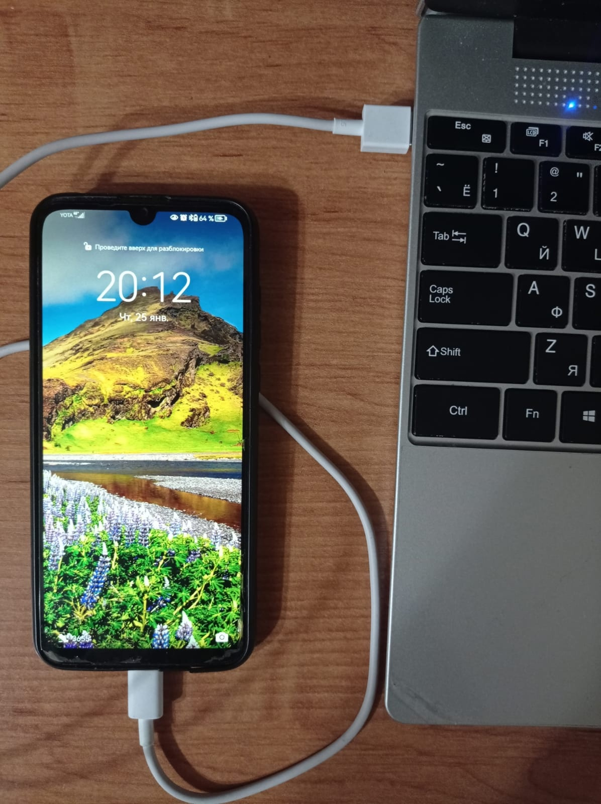

Перенос файла с телефона на пк и наоборот
Рассмотрим пример ниже, чтобы понять заголовок этой страницы:
Вы с фоткали с телефона какую-то картинку, её надо перенести на пк(ноутбук). Как это сделать?

Для начала надо подготовить компоненты:
- Ваш телефон (где находится картинка которая нам нужна)
- Пк или ноутбук, на который надо перекинуть
- Провод от зарядки
Преступим к самому процессу:
- Вытащите провод от зарядки, которым вы подзаряжаете свой телефон. Один конец подключите к телефону, другой к пк или ноутбуку.
- Найдите вот такое отверстие или как его называют порт.
- На телефоне вылезет сообщение. Нажмите на него и переключите с Только зарядка на Передача фото. Если вы случайно закрыли USB-подключение (картинка №1), то вы можете потянуть вниз шторку уведомлений( это то место куда приходят ваши сообщения), нажав на уведомление похожее как на картинке №2 вы перейдете к выбору подключения. Нас интересует Передача фото,нажимаем на неё и идем дальше по списочку.
- Осталось узнать путь к вашей фотографии.



Если не вылезло нигде сообщение о подключении по USB, просто попробуйте высунуть провод с телефона и вставить обратно.
№1
№2

№3